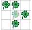

Kara möchte dem "Game of Life" zuschauen. Ausgedacht hat sich dieses "Spiel" der amerikanische Mathematiker Conway. Die Regeln sind einfach: Ein Feld in Kara's Welt ist entweder besetzt (Kleeblatt drauf) oder unbesetzt (kein Kleeblatt drauf). Die ganze Welt kann man sich als Population von Lebewesen vorstellen, aus der sich die nächste Generation nach folgenden Regeln entwickelt:
1. Ein leeres Feld wird in der nächsten Generation besetzt, wenn es genau drei besetzte Nachbarfelder hat. Beispiel: Das mittlere, leere Feld hat drei besetzte Nachbarfelder und wird daher "geboren":
2. Ein besetztes Feld bleibt auch in der nächsten Generation besetzt, wenn es zwei oder drei besetzte Nachbarfelder hat. Beispiel: Das mittlere Feld mit Kleeblatt (hell) hat drei besetzte Nachbarfelder und bleibt daher am Leben:
3. Alle Felder, bei denen die Voraussetzungen der Regeln 1 und 2 nicht zutreffen, sind in der nächsten Generation unbesetzt. Beispiel: Das mittlere Feld mit Kleeblatt (hell) hat zu viele besetzte Nachbarfeldern und "stirbt" daher:

Auch bei relativ einfachen Startwelten (mit vier oder fünf besetzten Feldern) ist es schwierig, die Entwicklung der nächsten Generationen vorauszusehen. Man muß sie wirklich durchspielen!